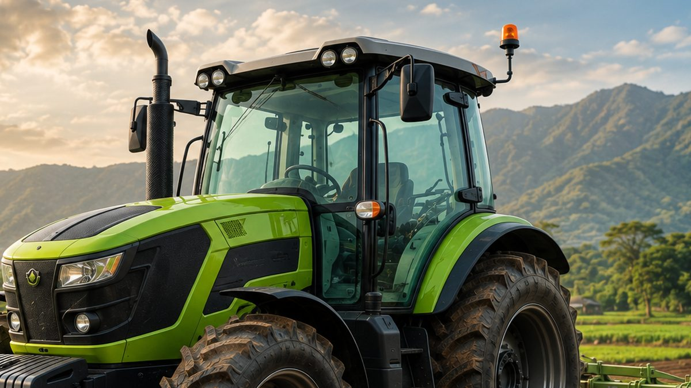

Auto Steering Traktor Mulai Dilirik Perkebunan: Apa Manfaatnya?
Teknologi kemudi otomatis berbasis GNSS mulai diperkenalkan untuk mekanisasi kebun sawit dan tebu. Begini cara kerja dan manfaatnya.

Mengemudikan traktor lurus selama berjam-jam bukan pekerjaan mudah. Sedikit saja jalur melenceng, hasilnya bisa berupa baris tanam yang tidak rapi, area yang terlewat, atau area yang dikerjakan dua kali.
Karena itu, teknologi kemudi otomatis (auto steering) mulai banyak diperkenalkan di Indonesia. Di ajang Hai Sawit Simposium (HASI) 2026 yang digelar di Jakarta pada 22–23 April 2026, teknologi autosteer dipromosikan sebagai cara meningkatkan efisiensi mekanisasi kebun sawit.
Apa Itu Auto Steering?
Auto steering adalah sistem kemudi otomatis yang mengarahkan traktor mengikuti jalur yang sudah direncanakan. Operator tetap berada di kabin untuk mengawasi pekerjaan dan mengendalikan implemen, tetapi setir diatur oleh sistem.
Cara Kerjanya
Receiver GNSS menerima sinyal satelit untuk menentukan posisi traktor. Teknologi RTK (Real-Time Kinematic) memberikan koreksi posisi sehingga akurasinya jauh lebih tinggi, sementara sensor mencatat perubahan kemiringan dan arah traktor.
Saat traktor melewati medan yang tidak rata, data sensor digabungkan dengan posisi GNSS untuk menghitung koreksi setir yang lebih akurat.
Manfaat untuk Perkebunan
Jalur Lurus dan Presisi
Jalur kerja yang lurus dan konsisten mengurangi tumpang tindih dan area yang terlewat, sehingga pemakaian benih, pupuk, dan solar lebih efisien.
Mengurangi Kesalahan Manusia
Saat pengolahan lahan dan perawatan tanaman, kesalahan kecil operator bisa berujung pada biaya operasional yang terbuang. Kemudi otomatis membantu menekan risiko ini.
Operator Tidak Cepat Lelah
Karena tidak perlu terus-menerus fokus menjaga setir, operator bisa lebih memperhatikan kerja implemen dan kondisi lahan.
Data Kerja Tercatat
Sistem auto steering modern dapat merekam jalur dan data pekerjaan, sehingga hasil kerja lebih mudah dipantau dan direncanakan untuk musim berikutnya.
Pilihan Auto Steering VectorAgr
HD408
Sistem ringkas dengan layar 10,1 inci dan perencanaan jalur 2.0 yang mendukung mode AB line, A+ line, parallel curve, pivot, dan diagonal. Lihat detail HD408.
HD812
Layar sentuh HD 12,1 inci dengan receiver GNSS terintegrasi, kompatibel dengan traktor, combine harvester, dan sprayer self-propelled berbagai merek. Lihat detail HD812.
HD818
Seri unggulan dengan layar Full HD 14 inci dan prosesor 8 inti, mendukung ISOXML serta kontrol variable rate berbasis peta resep untuk pertanian presisi. Lihat detail HD818.
Kesimpulan
Auto steering bukan lagi teknologi yang hanya dipakai di negara maju. Untuk perkebunan sawit dan tebu yang mengandalkan traktor setiap hari, kemudi otomatis bisa menjadi langkah awal yang praktis menuju pertanian presisi.
Ingin memasang auto steering di traktor Anda? PT Diesel Agri Sukses Sejahtera adalah distributor resmi VectorAgr dan siap membantu pemilihan serta pemasangannya.
Butuh saran? Hubungi kami.
Sumber: HaiSawit, HaiSawit, Zonex Geomatics.